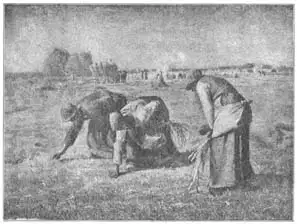

25
SOME VERY POOR PAINTERS
几位非常贫穷的画家

WHY should I tell you about very poor painters? If a painter can’t paint good pictures, why mention him at all? Because…these poor painters in this chapter did paint good pictures. They were poor in money, not poor in painting.
One of these poor, good painters was a Frenchman named Corot (Ko-ro). He was poor because no one would buy his paintings. Not until he was fifty years old did he sell a single picture. He wasn’t quite as poor as that sounds, however, because his father gave him an allowance of so much a year. It was a very small allowance, but Corot managed to get along on it.
After Corot finished school he wanted to be a painter. But his father was in the linen business, and into the linen business the son had to go. Still he kept hoping he could be a painter, and finally his father let him stop selling linen and begin to study painting. Corot went to Italy for several years and became a landscape painter. Then he went back to France. He painted many fine landscapes, but no one seemed to want to buy them.
Now, at this time some other painters who were very poor in money, found they could live more cheaply in the little village of Barbizon than they could in the city of Paris. And they found, too, that the country around Barbizon was a much better place in which to paint landscapes. There they could see the forests and streams and fields that they loved to paint. So these poor-in-money painters moved to little cottages in and near Barbizon. We call them the Barbizon Painters.
It was Corot’s idea to live in Barbizon. He liked to get up early in the morning and go out to study the trees and fields in the early light of dawn, when often the dew was on the ground and everything looked misty. He would make sketches, or quick drawings, of what he saw, and then come home and paint. He liked twilight and moonlight, too, and often painted twilight and moonlight landscapes. His pictures have a magical, dreamy beauty that has made them famous all over the world.
When he was an old man Corot’s pictures began to sell. Money and fame came rolling in at last. Corot had always loved to help other people in any way he could, so now that he was wealthy he had a fine time giving most of his money away to people who needed it.
Corot was always cheery and happy with his friends, although his landscapes often seem dreamy and sad instead of cheerful and gay. Every one loved him and called him Father Corot, and so it is pleasant to learn that he finally became so famous.
Another Barbizon painter was much poorer in money than Corot. He was one of the first to go to Barbizon. He took his wife and children and lived in a little threeroom house that had no wooden floors, just packed earth. Yet he was one of the greatest painters of France, Jean Francois Millet.
Millet had always been poor. His father was a farmer, or peasant, and when Millet was a boy he worked on his father’s farm. When he saw some pictures in an old Bible, he started to draw. At the rest hour in the fields the other workers would all take naps, but young Millet would spend the time drawing pictures. Finally the village where he lived gave him a little money to go to Paris to study art.
When Millet got to Paris he had a terrible time. He was awfully shy and not used to city ways, so he didn’t get along well at all. He barely made enough money for food, by selling little pictures he painted. He liked best to paint the poor farmer people or peasants whose life he knew so well, and at last when he was almost starving some one bought one of his peasant paintings. This gave him enough money to get out of Paris and go to Barbizon, and in Barbizon he lived the rest of his life.
Millet’s pictures of peasants at work were painted in an unusual way. The painter would go out on the farms and watch the people at work—digging, hoeing, spreading manure, sawing wood, churning butter, washing clothes, or sowing grain. Then he would come home and paint what he had seen. His memory was so good that he could paint at home without a model and get all the movements of his figures right. When he did need a figure to go by he would ask his wife to pose for him.

No.25-2 THE GLEANERS （《拾穗者》） MILLET （米勒 作）
One of Millet’s paintings is called “The Sower.” It shows a man planting seed. Have you ever seen a farmer sowing a field? In our country it is so often done with horses and a machine, that perhaps you don’t know what a swing there is to it when it is done on foot. The sower’s hand keeps time with his step. It reaches into his bag for seed and then swings backward to scatter the seed, and with each swing of his hand the sower strides forward. In Millet’s picture the sower has been working hard, but his swinging step and outflung arm still move smoothly, in time, like a machine. Only the man’s head shows how tired he is.
Millet made several pictures of “The Sower,” all somewhat alike. The most famous“Sower” is now in the United States, in Boston.
Another picture that is as famous as “The Sower” is called “The Gleaners.” A gleaner is some one who picks up what is left in the field after the wheat has been harvested. When farmers are very poor, as they were near Barbizon, even the little that the gleaners can find is a help. You can see from Millet’s picture what back-breaking work gleaning must be. And it is done by women!
Many copies have been printed of still another picture by Millet. You can sometimes buy them in the ten-cent stores. This famous painting is called “The Angelus.” It shows a French farmer and his wife stopping their work in the fields to bow their heads as they hear the church bell ring out the call to prayer, the Angelus.
Like Corot, Millet at last was recognized as a great painter before he died. But he always remained poor, and when he died his friend Corot had to give his widow money to live on.
Some of the other Barbizon painters became famous too. They all used to meet in a big barn where they had tacked drawings on the walls, and there they would talk about the painting they all loved so to do.
I’d like to tell you about these other friends of Millet and Corot but —there isn’t room.
【中文阅读】
为什么要介绍非常贫穷的画家呢？如果一位画家不能画出好的画，又何必提起他呢？不过这一章所提到的穷画家的确画得不错。他们虽然贫穷，却很擅长绘画。
在这些贫穷但优秀的画家中，有一位法国画家，名叫柯罗。柯罗贫穷，因为没人愿意买他的画。他到了50岁才卖出一幅画。不过，他其实并没有人们说的那么穷，因为他父亲每年都会给他一笔钱。这笔钱虽然不多，但也足够帮他维持生计。
柯罗从学校毕业后就想当一名画家。但是，因为父亲是做亚麻生意的，所以柯罗必须子承父业。不过，他一直持守当画家的梦想，最后父亲不要他卖亚麻了，让他去学画。柯罗去意大利学习了几年，成为一名风景画画家。然后回到法国。他画了许多优秀的风景画，但好像就是没人愿意买。
那时，还有另外几个穷画家。他们发现，如果他们住在巴比松小乡村的话，要比住在巴黎城便宜得多。而且他们还发现巴比松附近的乡村是画风景画的好地方。在那里，他们可以看到树林、溪流和田野，这些都是他们喜欢画的。于是，这些穷画家们都搬到了巴比松，住在附近的小木屋里。我们称他们为“巴比松画家”。
迁居巴比松原是柯罗的想法。他喜欢早起，然后去观察晨曦中的树木田野。那时地上都是露水，所有的东西看起来都朦朦胧胧。他通常会把看到的景色先速写下来或快速素描，回家后再画。他也喜欢暮色和月光，经常画暮色和月光风景画。他的风景画有一种奇妙的、梦幻般的美，因此闻名全球。
柯罗年老时，开始卖出画了。他最后总算是名利双收啦！柯罗一直都乐于助人。他现在既然富有了，就有机会把大部分的钱捐给那些需要帮助的人。
尽管柯罗的风景画看起来总带着梦幻和忧伤，看不到振奋和快乐，但他和朋友们在一起的时候却总是开朗和愉快的。人们都爱他，叫他“柯罗老爹”，所以他后来出了大名，大家都感到高兴。
还有个巴比松画家比柯罗更穷。他是第一批搬去巴比松的画家之一。他带着妻 儿，一家人住在一栋三间屋的小房子里。房子里没有铺木地板，地只是夯过的硬土。但他后来却成了法国最伟大的画家之一，他就是让·弗朗西斯·米勒。
米勒一直贫穷。他父亲是个农夫，或农民。米勒小时候在父亲的农场干活。当他看到一本旧《圣经》上的一些图画时，就开始照着画。田间休息时，其他人都会打盹小憩，可小米勒却用这时间来画画。后来，他所住的村子给了他一点钱，让他去巴黎学画。
米勒到了巴黎，生活艰难。他非常害羞，不习惯城里的生活方式，所以根本无法适应。他靠画点小画来卖点钱，但只能糊口。米勒最喜欢画贫苦的农夫或农民，因为他非常熟悉他们的生活。最终，他被饥饿所迫，而就在这个时候，有人买下了他的一幅农民画。而这么一笔钱足够让他离开巴黎，迁居巴比松。他在巴比松度过了余生。
米勒用一种独特的方法来描绘那些干活的农民。他常常会走出家门来到田间，观察干活的人们——挖土、锄地、施肥、锯木、做黄油、洗衣服、播种等。然后，他回到家，把所看到的画下来。他的记忆力非常好，甚至待在家里，不用模特就可以把人物的动作画得恰到好处。如果他实在需要一个模特时，就请妻子为他摆个姿势。
米勒有一幅画叫《播种者》。画的是一个人正在播种。见过农夫在田间播种吗？在美国，播种通常是由马和机器共同完成的，所以你可能对在田间徒步播种的场景不是很了解。播种者需要手脚配合。他们首先要从胸间口袋里抓一把种子，然后转身把种子撒出去。每撒一次，播种者就要朝前迈一步。米勒画中的播种者虽然辛苦，但他迈开的步子和舞动的手臂，像机器一样，很合拍。只有从画中人物的头上，才能看出他是多么的劳累。
米勒画过好几幅《播种者》，都相差不大。最有名的一幅如今保存在美国波士顿。米勒还有一幅画叫做《拾穗者》，和《播种者》一样有名。拾穗者指那些在收割过的田间捡拾剩麦穗的人。那时巴比松附近的农民都很穷，所以捡到的麦穗即使很少，但对拾穗者来说，就是帮助。从米勒的画中，我们可以看出拾穗是个非常辛苦的活儿。而且都是由女人来干的！
米勒还有一幅画，直到今天还在被多次印刷。有时候在二元店里都能买到。这幅名画叫《晚祷》。画面上一个法国农夫和妻子正在田间干活，听到教堂敲响晚祷的钟声，停下农活，低头祷告。
同柯罗一样，米勒到去世前才最终被认可为大画家。但他一直贫穷，就连去世后，他妻子还得靠朋友柯罗资助度日。
其他几位巴比松画家后来也出了名。他们过去常常在一个大谷仓里聚会，把各自的画挂在墙上，然后大家就地谈论。他们都喜欢这样做。
我还想介绍米勒和柯罗的其他几位画家朋友，但是——空间有限。